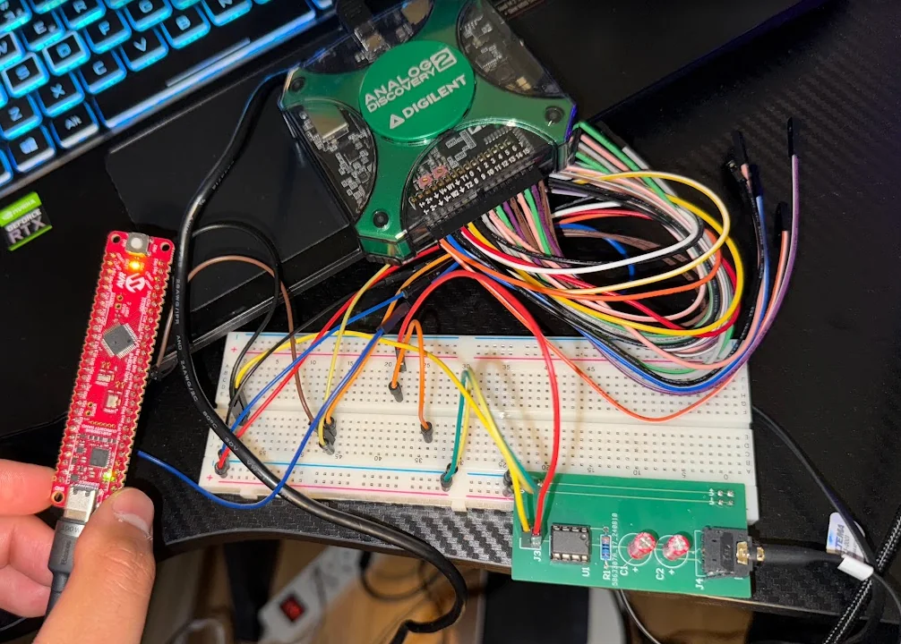
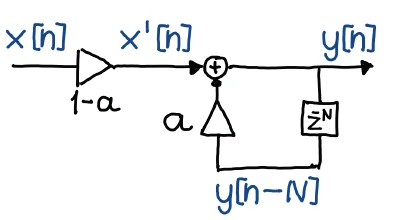
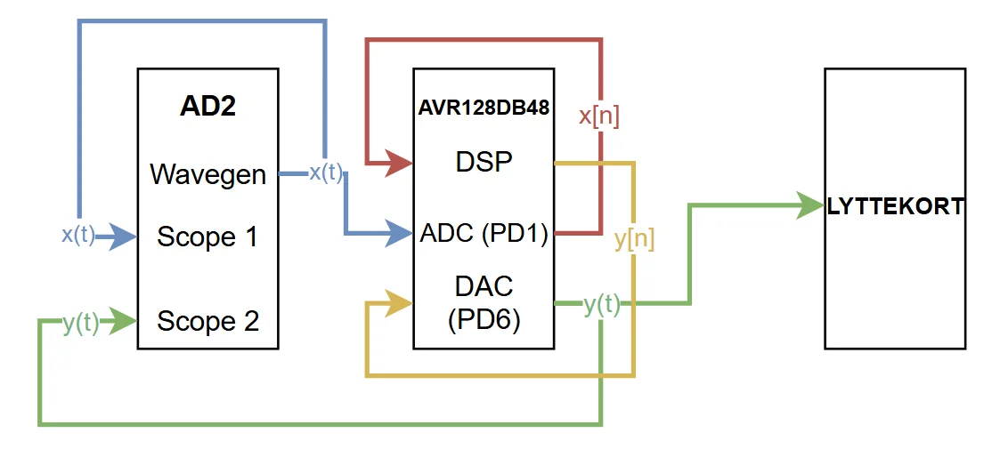
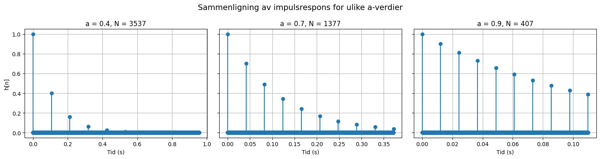
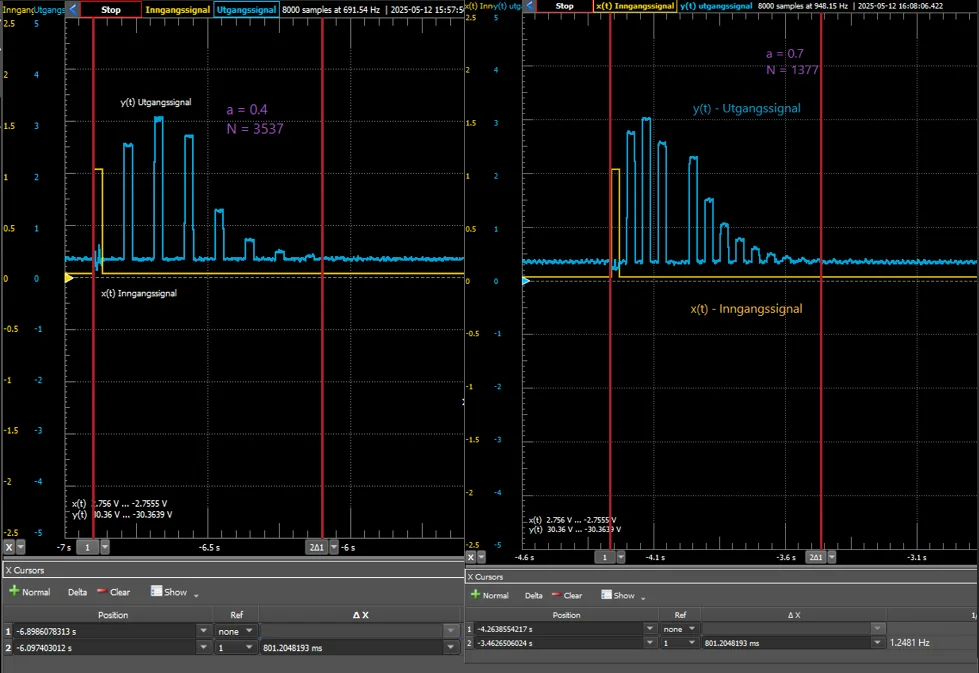

DP4 Kunstig romklang
Digital romklang i sanntid på AVR128DB48: ett differanseledd med ringbuffer, fastpunktaritmetikk og 30 µs samplingstid.

Resultat
- Kravet var en etterklangstid på 0,8 s. Målt tid var 0,78 s med a = 0,4 og 0,81 s med a = 0,7.
- Signalbehandlingen kjører i en avbruddsrutine med heltallsaritmetikk for å holde sanntidskravet.
- Teoretisk impulsrespons ble regnet ut i Python og sammenlignet med målinger fra oscilloskopet.
Figurer







